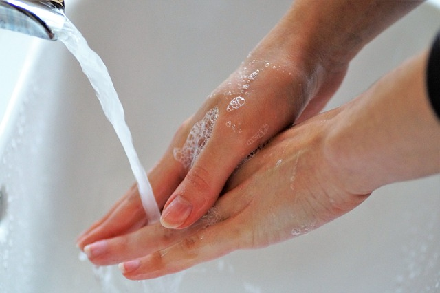
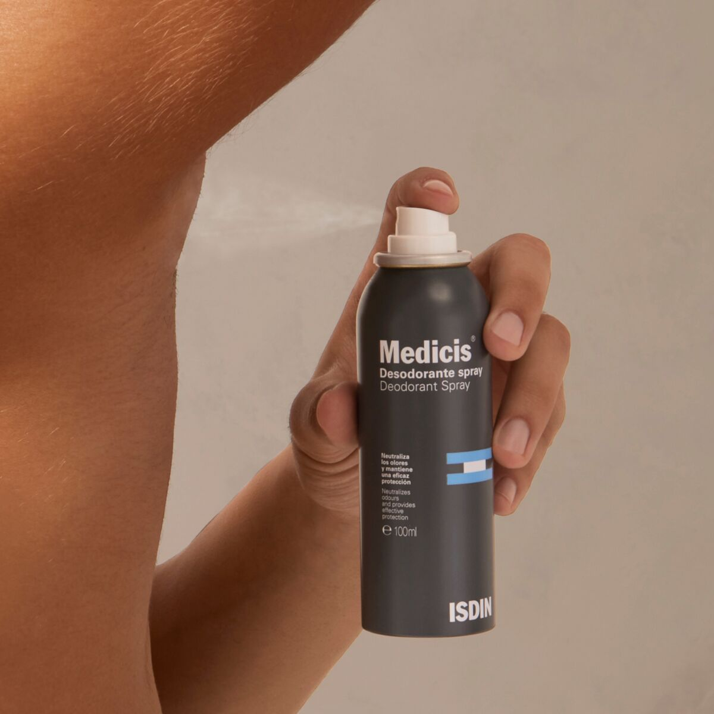

-
Lavarse las manos correctamente es la práctica más sencilla e importante que debemos de realizar todas las personas, como hábito de higiene básica para cuidar nuestra salud.

-
El baño diario es una costumbre que debemos de establecer. Ayuda a deshacernos de las bacterias que causan el mal olor. Por eso es tan importante tomar una ducha y lavarse muy bien todo el cuerpo para evitar que las bacterias se asienten en la piel.

-
Debemos usar desodorantes para evitar malos olores o una sudoración. Los desodorantes neutralizan el mal olor que provoca el sudor debido a sus propiedades antibacterianas.
